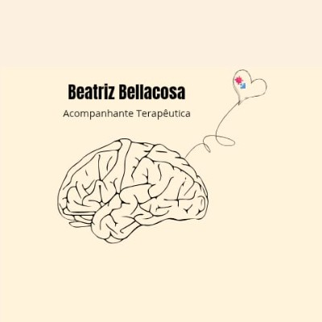

Acompanhante Terapêutica · São Paulo
Cuidado especializado para crianças com TEA, deficiências cognitivas e necessidades especiais.
Sou Beatriz Bellacosa Alves, formanda em Psicologia (conclusão prevista para 2026) e Acompanhante Terapêutica com atuação desde 2023. Minha prática é guiada pelo cuidado genuíno com cada criança e pela crença de que o desenvolvimento floresce quando se sente seguro e acolhido.
Com formação contínua em ABA, TCC Infantil, Modelo Denver e Análise Comportamental, ofereço suporte técnico e humano às crianças com Transtorno do Espectro Autista (TEA), Síndrome de Down e outras condições de desenvolvimento.
Atualmente realizo atendimentos como AT na Clínica Conforto Terapias Integradas, acumulando experiência prática supervisionada ao longo da graduação.
Acompanhamento especializado com base em ABA, Modelo Denver e estratégias naturalistas — promovendo autonomia, comunicação e inclusão.
Técnicas da Terapia Cognitivo-Comportamental adaptadas para crianças, com abordagem lúdica e acolhedora.
Suporte individualizado promovendo inclusão, desenvolvimento funcional e autonomia.
Suporte ao aluno em contexto escolar e clínico, com manejo comportamental e comunicação familiar.
Brincadeiras estratégicas e jogos simbólicos como instrumentos terapêuticos de aprendizagem.
Suporte às famílias para compreender o desenvolvimento da criança e aplicar estratégias no cotidiano.
Último ano em curso — conclusão prevista para dezembro de 2026. CRP a ser obtido após formatura.
Clínica Conforto Terapias Integradas — Atendimento a crianças com TEA e necessidades especiais, aplicando técnicas ABA e estratégias naturalistas em ambiente clínico.
Atendimento ao público e suporte administrativo em clínica de saúde.
Atendimento ao público em clínica médica.
Primeiro contato com ambiente clínico em psicologia.
RB Psicologia — Regina Bérgamo
Terapeuta ABA · 2025
Instituto Singular — Mayra Gaiato
Análise Comportamental · 2024
Instituto Singular — Mayra Gaiato
Formação AT · 2024
Instituto Singular — Mayra Gaiato
Estratégias Denver · 2024
Centro Educacional Sete de Setembro
TEA · 2024
Centro Educacional Sete de Setembro
TCC Infantil · 2024
Centro Educacional Sete de Setembro
ABA Clínica · 2024
Rhema Educação
Seminário Inclusão · 2024
Adapte Educação — EducaTEA
Manejo Comportamental · 2024
Instituto Singular — Keli Santos
Brincadeiras Estratégicas · 2024
Se você busca um acompanhamento terapêutico especializado e humano para seu filho, entre em contato. Atendo como AT, com foco em crianças neurodivergentes e com necessidades especiais.
📍 São Paulo – SP
+55 (11) 96835-6211